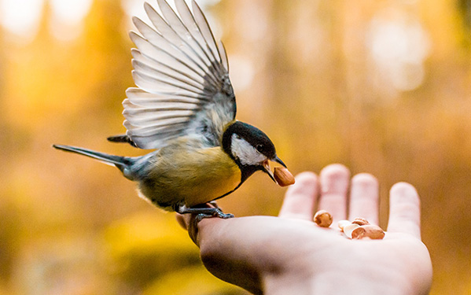
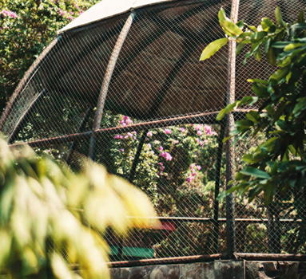
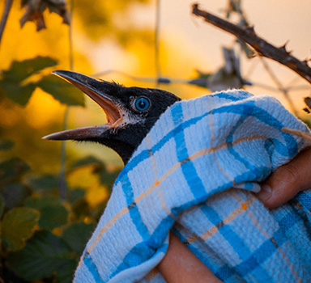

> 한국조류보호협회 >
협회소개 > 협회업무
협회업무
"우리 자연문화재 보존을 위해 협력한다"
-
협회이념
- 새사랑, 자연사랑, 문화재사랑 -
본 협회는 국가의 천연기념물 보호ㆍ관리정책에 입각하여 천연기념물( 야생조수류 ) 등 우리의 소중한 자연문화재를 후손들에게 길이 물려줄 수 있도록 보전하는 한편 이의 보 급ㆍ선양을 통해 국민의 삶의 질 향상을 도모하고 자연애 호ㆍ생명사랑 운동을 널리 펼치는데 있습니다.

협회에서 하는 일
새를 보호하는 것은 곧 사람을 보호하는 일
-

- 조류방사장 설치 · 운영
- 조난 야생조수류 긴급구조단 및 임시 치료소와 다친 새들의쉼터 설치 운영.
-

- 밀렵행위 고발조치
- 천연기념물 등 야생소수류의 밀 렵감시 · 홍보 및 밀렵행위에 대 한 관련 기관에 고발 조치.
-
- 조사 및 연구
- 천연기념물 등 야생조수류의 조 사 및 연구 사업.